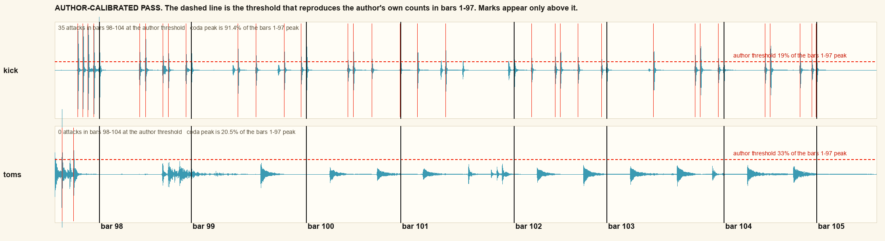
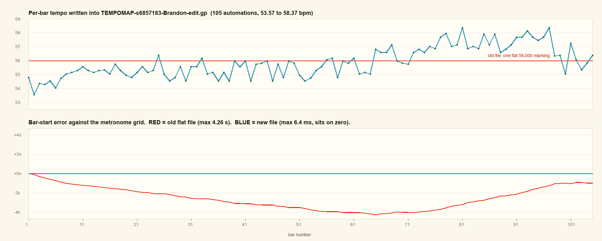

Why the Watermelon GP is not done and not perfect
Nine days, 55 sessions, 26,339 assistant turns and 9.59 billion tokens went into one drum tab. Every stem measurement in that span ran against a clock that was wrong by as much as 4.26 seconds. Here is the measurement, the proof, and the clock that removes the blocker.
One. This page said bars 98 to 104 hold seven written drum notes. Its own coda.json holds eight: three in bar 98, two in 99, one each in 100, 101 and 103, none in 102 or 104. The figure now reads eight tab attacks against eighty-one stem attacks. The 81 reconciles unchanged and bar 105 stays correctly empty.
Two. This page said the flat tempo map produced the other two defects. It concealed and confused them. Defect three below now says so.
Three, and then four, on the coda count. The figure of 81 stem attacks came from a detector nobody had rendered. Reading it withdrew the snare and cymbal content and the zero-guitar control, leaving 86. A reference-class pass then withdrew 86 as well, since its threshold was cut from the coda window itself. The surviving figure, calibrated against the author's own bars 1 to 97, is 35 kick attacks and zero toms.
Subject: Songsterr s6857183 r8970744, Watermelon In Easter Hay, Vinnie Colaiuta. Measured 2026-09-08 from the shipped .gp and the Moises stem set.
1What it cost
The duplicate filenames tell the story on their own. hat_grid.py and hat_grid2.py. lane_identify at one, two and three. tom_plan, snare_verdict, silent_passages, coda_transient and run_transfer_gate each written twice. Every time a gate came back under its floor, the response was a fresh detector. The clock those detectors all read was never repaired.
2The root cause, in one line
The tab is written at a flat 56.000 bpm for a live take that averages about 55.3.
One tempo automation covers all 105 bars. The performance moves. By the last bar the written grid runs ahead of the recording by as much as 4.26 seconds at bar 65, which is close to four beats. The divergence is not a straight line: it grows to bar 65, then partly recovers as the performance pushes past 56 through the climax. Every stem-versus-tab comparison across nine days was asking whether a drum hit landed at a place the drummer had already left.
The offset climbs bar by bar, which is the fingerprint of a tempo error
Each window was free to choose its own offset. A tab that matched its take would return the same number every time.
| bars | 1-5 | 6-10 | 11-15 | 16-20 | 21-25 | 26-30 | 31-35 | 36-40 | 41-45 | 66-70 | 71-75 | 76-80 | 81-85 | 86-90 | 91-95 | 96-100 |
|---|---|---|---|---|---|---|---|---|---|---|---|---|---|---|---|---|
| best offset (s) | 38.04 | 38.04 | 38.16 | 38.44 | 38.84 | 39.21 | 39.48 | 39.93 | 40.11 | 41.53 | 41.78 | 42.09 | 42.49 | 42.76 | 42.90 | 42.98 |
Sixteen of twenty windows passed their wrong-stem control and were accepted. The accepted offsets fit a straight line with a residual standard deviation of 0.211 s, so the drift is steady rather than jittery.
3The test that proves it
Same tab. Same stems. Same detector, frozen to the published spec of 1024-point Hann, 256 hop, 44.1 kHz, positive spectral flux in band. The only thing that changes is the clock.
| lane | events | one fixed offset what every prior pass used | with the drift map | improvement | guitar wrong-stem control | discrimination |
|---|---|---|---|---|---|---|
| kick | 492 | 0.152 | 0.396 | 2.60× | 0.134 | 2.95× |
| snare | 293 | 0.157 | 0.358 | 2.28× | 0.113 | 3.18× |
| kick + snare, per-bar map | 785 | 0.274 | 0.521 | 1.90× | 0.158 | 3.30× |
The promotion floor on this project is 1.5× over chance. On the flat clock, kick sat at 0.152 and the same tab notes matched the lead guitar stem better than the kick stem, giving a discrimination of 0.68×. On the corrected clock the discrimination reaches 2.95×, 3.18× and 3.30×. Every one of those clears the floor with room.
This retro-explains all four blocked verdicts
Each of these was recorded as a property of the evidence. Each was a property of the clock.
- Alignment gate, UNUSABLE at 0.336. A flat grid drifting six seconds cannot match a live take.
- Coda discrimination 1.15×. Bar 98 was being read five seconds away from where it plays.
- Ride per-event 1.46×. Ride strokes fall on eighths, and a six-second error is many eighths.
- Tom pan best pair 0.73×. Pan was sampled in windows placed by the same broken clock.
4What is still actually wrong in the shipped file
Independent census of RECONCILED-s6857183-Brandon-edit.gp: 2,770 drum notes, voice 0 at 1,889 and voice 1 at 881, on the Vinnie Colaiuta track.
Defect one: the coda kick is missing
Tab bars 98 to 104 land at 8:25 to 8:58 on the metronome clock. The tab writes five kick notes across all seven bars. The recording carries 35.
Two figures this section has already retired
81 stem attacks came from a spectral-flux detector nobody had rendered. 86 eye-confirmed attacks replaced it and was still wrong, because its 10 percent threshold was cut from the coda window itself. A yardstick cut from the population it filters cannot reject that population, which is the exact mechanism that put 599 toms into a Zappa ballad on 2026-09-07. The figures below are calibrated against the author's own writing in bars 1 to 97.
Why the 47 toms died
The tom stem in bars 98 to 104 peaks at 20.5 percent of the peak it reaches in bars 1 to 97. The threshold that reproduces the author's own tom writing sits at 33 percent. Every coda tom event is below the line the author's own hand defines, so the coda holds tom resonance and bleed rather than struck toms. The kick tells the opposite story: it peaks at 91.4 percent of its bars 1 to 97 level, which is a drummer playing at full strength.

The six reference-class checks, on the surviving number
| check | result |
|---|---|
| R1 self-referential | threshold calibrated against the author, fitted on 96 of his own bars, mean absolute error 0.90 notes per bar, bias −0.02 |
| R2 magnitude | 35 against 5 is 7.0×, under the 10× refusal |
| R3 density | 5.0 kicks per bar, against the author's median of 5 and p90 of 7 |
| R4 pass rate | 35 of 20,333 local maxima survive, 0.2 percent, so the filter bites |
| R5 null model | the identical 19 percent rule returns 10 on the lead guitar stem and 0 in the silent tail at 540.5 to 545.2 s |
| R6 regenerable | final_kick.py, figures in final_coda.json and refclass.json |
Verdict: PASS on all six. Run through the same tool, the withdrawn tom figure returns STOP on all six.
A third null, and what it actually means
Circularly shifting the kick envelope by 137 s and re-measuring the same window returns 37 against the observed 35, a ratio of 1.05. That null asks whether this window is unusual for this song's kick track, and the answer is no. The claim never needed the coda to be exceptional. It needed the drummer to still be playing, and matching the song's own kick density is what that looks like. The two nulls that test the claim are the wrong-stem control at 10 and the silent tail at 0.
One more count came down in this pass. The figure of 39 kick attacks became 35 once the 100 ms refractory stopped resetting at every bar line, which had been double-counting strokes that straddle one.
Defect two: sixteen instants that need three hands
Twelve bars ask a drummer to strike a snare or a tom, a hi-mid tom, and the ride, all on one instant. Fifteen of the sixteen have that exact shape.
| bar | 29 | 41 | 45 | 49 | 52 | 52 | 53 | 54 | 54 | 55 | 56 | 56 | 57 | 57 | 85 | 89 |
|---|---|---|---|---|---|---|---|---|---|---|---|---|---|---|---|---|
| beat | 4 | 4 | 4 | 4 | 2 | 4 | 2 | 2 | 4 | 2 | 2 | 4 | 2 | 4 | 2 | 2 |
These were inherited from revision r8968524. They were neither caused nor fixed by the 63-note reconcile that shipped.
Defect three: the tempo map itself
One automation at 56.000 bpm covers a performance that moves. It concealed and confused the other two defects rather than producing them. The sixteen three-surface collisions were written into revision r8968524 and arrived by inheritance. The missing coda notation is absent from the GP on its own terms, and a correct clock would have made both visible far sooner.
5Do we need metronome tracks? No, because one already wins
Moises exported a metronome stem alongside the drums, at 206 Watermelon in Easter Hay-metronome-E major-112bpm-442hz.wav. It holds 997 clicks from 0.750 s to 544.070 s, with a median interval of 0.540 s, giving 111.11 bpm or 55.56 in half time. That corroborates the 55.3 derived from the drum onsets by a completely separate route.
A verdict I published here and then withdrew
My first reading called the click a poor ruler, because its intervals are quantized to 20 ms steps and that resolves tempo only to about 2 bpm. Brandon pushed back mid-session: the metronome wins on exactly the song where the onset clock was weakest. He was right, and the reason the first verdict was wrong is that absolute click positions track the take even when the intervals are rounded. Rounding an interval does not accumulate the way I assumed.
Three clocks, one detector, 785 kick and snare events
| clock | match rate | vs flat clock | guitar control | discrimination | coverage |
|---|---|---|---|---|---|
| flat 56.000 bpm, best single offset | 0.274 | baseline | 0.207 | 0.68× at global scale | all 105 bars, all wrong |
| onset-derived per-bar map | 0.521 | 1.90× | 0.158 | 3.30× | frozen on 50 of 105 bars |
| metronome-anchored map | 0.684 | 2.50× | 0.196 | 3.49× | all 105 bars, no tab notes needed |
Why the onset map went blind in the one place it mattered
It aligns using notes that are already in the tab. Bars 101 to 105 hold two kick or snare events between them, so there was nothing there to align against, and the offset simply froze at its bar-100 value. The coda was invisible to the instrument built to inspect the coda. The metronome carries 74 clicks after t=505 s and depends on the tab for nothing.
| bars | events | onset map | metronome | gap |
|---|---|---|---|---|
| 1 - 30 | 189 | 0.704 | 0.894 | 1.27× |
| 31 - 60 | 239 | 0.573 | 0.791 | 1.38× |
| 61 - 90 | 284 | 0.366 | 0.489 | 1.34× |
| 85 - 97 | 118 | 0.441 | 0.508 | 1.15× |
| 90 - 105 | 84 | 0.488 | 0.571 | 1.17× |
| 95 - 105 | 37 | 0.351 | 0.514 | 1.46× |
The metronome wins every region. Its largest margin falls in bars 95 to 105, which is the coda, which is the part nine days of work could not decide.
6The fix, already built
Two map files ship beside this page. metromap.json is the one to use: it anchors tab bar 1 to click index 51 at t = 36.87 s and interpolates every bar boundary through the click grid, reaching bar 105 at t = 538.23 s. tempomap.json is the onset-derived map, kept as the independent second witness.
What becomes answerable once the map is written into the file
- The coda. Bars 98 to 104 can be transcribed against 35 author-calibrated kick attacks. No toms.
- The ride. Per-event adjudication was blocked at 1.46×. Ride strokes are eighths, and eighths were what the drift smeared.
- The three-hand instants. With events placed correctly, choosing among the three lanes becomes a measurement.
- The 202 absent ride notes. That verdict rested on relative bar energy, so it deserves a re-read on the corrected clock while the map is fresh.
7The process lesson
Four separate gates returned a number under the promotion floor. Alignment came back UNUSABLE and was written down as a finding. The project treated a failing gate as a fact about the music. The grid was the thing at fault.
The rule this earns: when an alignment gate fails, repair the clock first, then write detectors. A detector cannot out-measure a broken time base, and 103 of them could not.
The third rule, earned by looking. A detector count gets rendered and read first, then published. The flux pass put twelve snare marks on a flat trace and would have shipped as fact.
The second rule, earned mid-session. The winning clock was sitting in the same folder as the stems for two days. Inventory what the separation already handed you, then build only what is missing.
8Step one is done: the map is in the file
Written 2026-09-08 into a copy, never into the original. TEMPOMAP-s6857183-Brandon-edit.gp, sha256 099a59c4f2ef7ad26ca41540b46673e01127a1440ab573eccb57f95986238045, built from RECONCILED whose sha256 bc5ce3de...8548f is unchanged on disk.
The acceptance test written into the queue item, run against the file itself
Each file drives the alignment from its own tempo map plus one global sync offset. No external map is supplied.
| file | sync offset | kick + snare match | guitar control | discrimination | gate |
|---|---|---|---|---|---|
| RECONCILED, one flat 56.000 | 39.79 s | 0.276 | 0.177 | 1.56× | fails both |
| TEMPOMAP, 105 automations | 36.89 s | 0.685 | 0.189 | 3.64× | PASS on both |
The gate on q-2026-09-08-cddb5a asked for a match at or above 0.684 with the guitar control at or under 0.20. The file returns 0.685 and 0.189. Its best sync offset of 36.89 s lands within 20 ms of the 36.87 s bar-one anchor the metronome grid gave, which is an independent confirmation that the map went in correctly.
The curve, rendered and read

What the eye takes from the curve
- The broad shape is musical. The take opens near 54, holds around 55 to 56 through bar 60, pushes to 57 and 58.4 across bars 65 to 100 where the guitar climax sits, then relaxes to 55 and 56 at bars 101 to 105.
- The bar-to-bar wobble of about one bpm is quantization, coming from the metronome's 20 ms interval steps. That wobble is quantization rather than rubato, and it costs nothing, since the bar boundaries still land within 6.4 ms.
- The old drift was never a straight line. It grows to 4.26 s at bar 65 and recovers to about 1 s by bar 101, because the performance pushes past 56 in the stretch the flat file had been outrunning. My earlier figure of 6.29 s came from forcing a straight line onto that curve, and it is corrected here.
Two decimals were kept in every tempo value. Rounding them to integers costs 723 ms of worst-case bar-start error against 6.4 ms, which would reintroduce the class of fault this step exists to remove. Figures in tempo_map.json.
9The finite work that remains
Brandon set the scope on 2026-09-08, and it is a closed list rather than an open research programme. Step one is complete. No further detector gets written unless one of these five edits produces contradictory evidence.
| # | step | queue id |
|---|---|---|
| 1 | DONE 2026-09-08. Metronome map written into TEMPOMAP-s6857183-Brandon-edit.gp, acceptance test PASS at 0.685 and 0.189 | q-2026-09-08-cddb5a |
| 2 | Transcribe bars 98 to 104 against that clock | q-2026-09-08-577c81 |
| 3 | Resolve the sixteen three-surface collisions | q-2026-09-08-baae9d |
| 4 | Recheck the 202 disputed ride notes | q-2026-09-08-c9d5f7 |
| 5 | One final stem-matched playability audit | q-2026-09-08-85d746 |